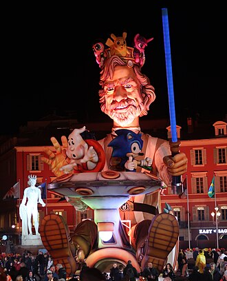

Le carnaval de Nice est le plus grand carnaval de France et l'un des plus célèbres du monde. Il se déroule chaque hiver à Nice, au mois de février pendant deux semaines incluant trois week-ends, et attire plusieurs centaines de milliers de participants. Le carnaval est l'un des quatre plus grands carnavals au monde, après ceux de Rio, Venise et La Nouvelle-Orléans.

Le mot « carnaval » dévoile son sens par deux pistes étymologiques. La plus usitée est : carne levare levamen (« enlève la chair »). Celle-ci est directement en rapport avec le catholicisme et la période où l'on festoie une dernière fois avant les quarante jours du Carême à Pâques. L'autre définition est, quant à elle, païenne : carrus navalis (« char naval ») propre aux barques sur lesquelles Dionysos, dieu venu de la mer, pénétrait dans les îles grecques. Cette dernière est la plus ancienne, car le carnaval, se situant en hiver, était ritualisé pour faire revenir le printemps et donc la nouvelle année. Les hommes primitifs se paraient de peaux de bête, ce qui explique les nombreux costumes d'animaux, de plantes, de fruits, de légumes et autres en rapport avec la nature, encore présents aujourd’hui.
Alphonse Karr est à l'origine de la première bataille de fleurs en 1876. Cet écrivain français d'origine allemande, passionné par les fleurs et résidant à Nice, souhaitait un spectacle où les gens pourraient se jeter d'odorants bouquets au visage. Ainsi en 1876, Andriot Saëtone créa la première bataille de fleurs sur la promenade des Anglais.
La bataille de fleurs se déroule pendant la période de carnaval. Elle est le complément des caricatures et autres figures grotesques des corsi et se présente sous la forme d'une parade de vingt chars fleuris où de jeunes femmes et désormais jeunes hommes lancent des fleurs aux spectateurs. Des troupes musicales ou d’art de rue, venues des quatre coins du monde, prennent place entre les chars comme pour le corso carnavalesque.